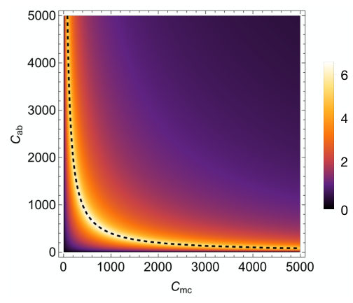

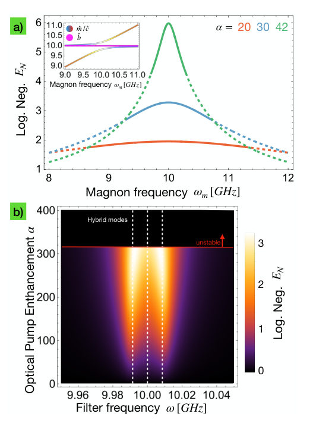
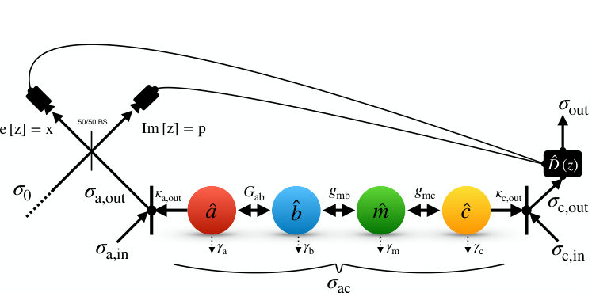
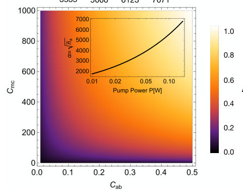
Highlighted author(s): Manuele Landini
Authors: Camilo Cantillano, Karthick Ramanathan, Zekai Chen, Ang Yang, Emilio Aguilera-Valdes, Lei Ying, Manuele Landini, Hanns-Christoph Nägerl, Yanliang Guo
Type: experiment · Category: quantum gases · PDF: https://arxiv.org/pdf/2605.22449v1
Analysis basis: full PDF text, analyzed in chunks
Topic relevance: 🔥 analog quantum simulation 4/5 · 🔥 driven-dissipative phase transition 4/5 · 🔥 non-equilibrium dynamics 4/5 · non-equilibrium universality 3/5 · entanglement & information structure 2/5 · scars & prethermalization 2/5
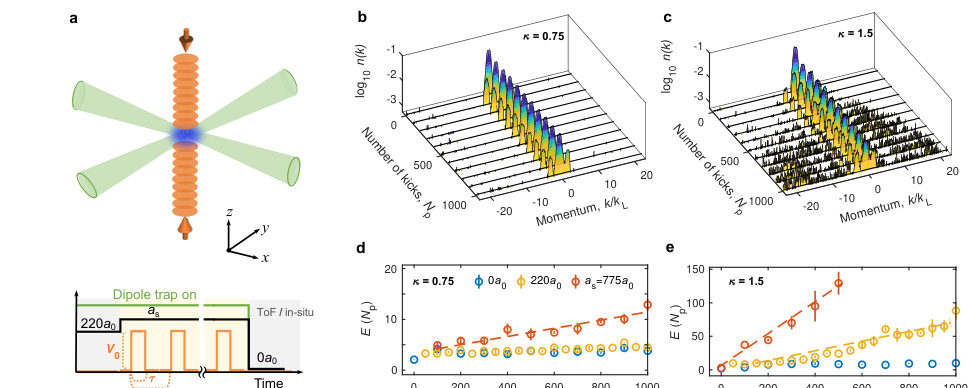
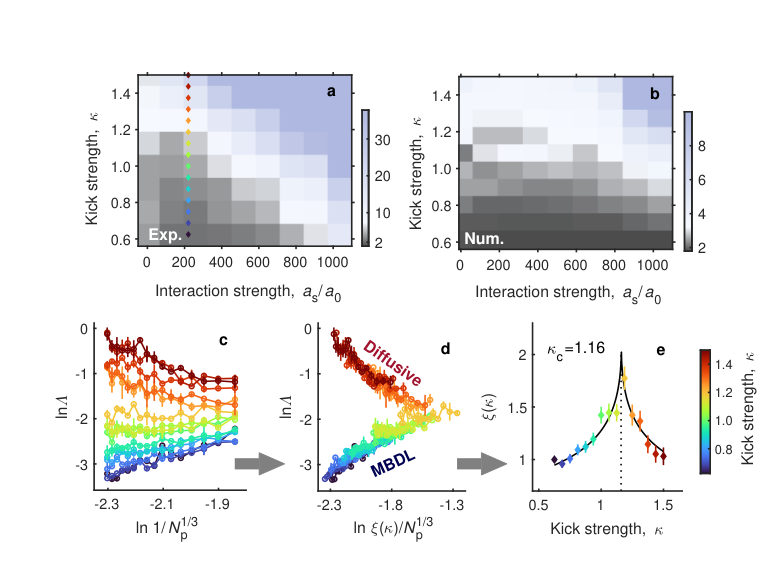
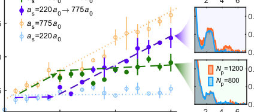
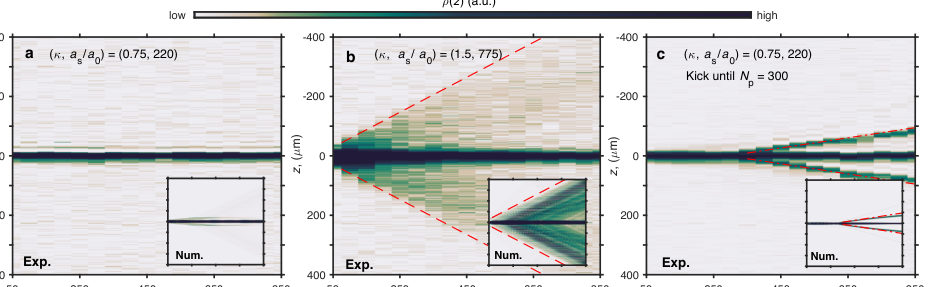
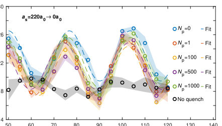
Summary. The researchers experimentally observed a metal-insulator phase transition in a 3D driven Bose-Einstein condensate. By tuning interactions and driving strength, they identified a sharp boundary between a localized phase (MBDL) and a diffusive phase. This work clarifies how interactions and quantum coherence jointly govern transport in isolated many-body systems.
Why it may be interesting. It provides a direct experimental realization of a dynamical phase transition in a many-body system, demonstrating how interactions can actively reorganize Hilbert space to enable transport, which is fundamental to understanding the emergence of classicality and ergodicity.
Main problem. Understanding the competition between quantum interference, which promotes localization, and interactions, which promote ergodicity and diffusion, in a driven many-body system.
Main result. Discovery of an interaction-enabled metal-insulator phase transition in a 3D quantum gas, characterized by a sharp dynamical boundary between many-body dynamical localization and diffusive energy absorption.
Method. Experimental implementation of a 3D Quantum Kicked Rotor using a Cesium BEC, combined with finite-time scaling analysis and interaction-quench tests to verify the transition's nature.
Model / system. A 3D quantum gas consisting of approximately 10,000 133-Cs atoms in a Bose-Einstein Condensate, subject to a periodic optical lattice pulse protocol (Quantum Kicked Rotor) with tunable s-wave scattering via Feshbach resonance.
Key observables. Momentum distribution n(k), energy proxy E(Np) (second moment of momentum distribution), and spatial density distribution.
Important parameters / regimes. Kick strength (kappa), interaction strength (as), number of kicks (Np), and pulse period (T).
Assumptions / limitations. The system is treated as a closed Floquet many-body system; the scaling analysis assumes an effective dimensionality of d=3.
Figures summary. Fig 1 shows the experimental setup and momentum distributions; Fig 2 presents the localization-delocalization phase diagram; Fig 3 demonstrates the reversibility of the transition via interaction ramps; Fig 5 shows interaction quench effects on peak width; Fig 6 shows energy proxy evolution at the critical point.
Paper structure. The paper introduces the problem of interaction vs. coherence, describes the 3D BEC experimental platform and QKR protocol, presents the mapping of the phase diagram and scaling analysis, demonstrates the reversibility of the transition, and concludes with the implications for the quantum-to-classical transition.
Particle transport and energy flow are central for our understanding of a wealth of phenomena in physics and the natural sciences. Interactions are generically expected to promote ergodicity and diffusive behavior, yet quantum interference can arrest transport and prevent energy absorption, defying classical expectations. How interactions and quantum coherence compete remains a fundamental open question. Here, we experimentally investigate their interplay in a periodically driven, three-dimensional (3D) quantum gas with tunable interactions. Strikingly, we find that interactions give rise to a sharp dynamical boundary that separates localization from diffusive energy absorption. By tuning the driving amplitude and interaction strength, we map the localization-delocalization phase diagram and characterize the boundary via finite-time scaling. On the insulating side, we observe many-body dynamical localization (MBDL) for a wide range of parameters, finding arrested transport in momentum space. Near the boundary, transport becomes subdiffusive, whereas in the delocalized regime we observe classical diffusion, yielding a metal-insulator transition that we interpret in terms of localization in many-body Hilbert space. Our results exemplify an interaction-enabled dynamical phase transition in a closed Floquet many-body system and clarify how coherence and interactions jointly govern the quantum-to-classical transition.
Authors: Anna Delmonte, Marco Schirò
Type: theory · Category: statistical mechanics · PDF: https://arxiv.org/pdf/2605.22555v1
Analysis basis: full PDF text, analyzed in chunks
Topic relevance: 🔥 entanglement & information structure 4/5 · 🔥 measurement-induced transitions 4/5 · 🔥 non-equilibrium dynamics 4/5 · 🔥 quantum measurements 4/5 · methods for driven-dissipative 3/5 · Keldysh / 2PI / non-Gaussian methods 2/5 · Kondo & dissipative impurity 2/5 · driven-dissipative phase transition 2/5 · non-equilibrium universality 2/5
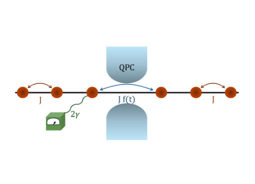
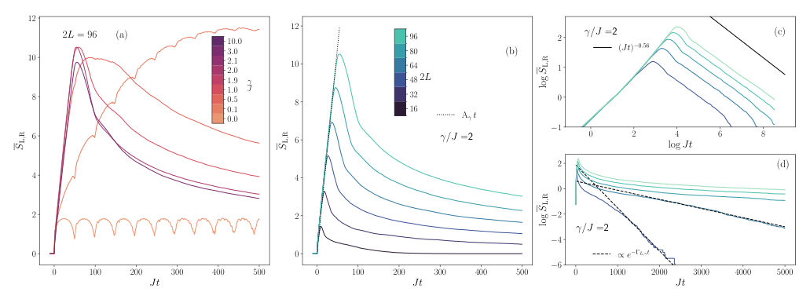
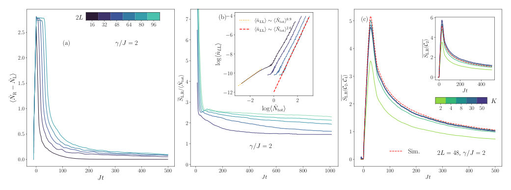
Summary. This paper demonstrates that local monitoring of particle loss at a quantum point contact fundamentally changes entanglement growth from logarithmic to linear, followed by a decay. The study links these entanglement dynamics to charge depletion and provides an analytical quasiparticle framework to explain the transition.
Why it may be interesting. It provides a deep connection between measurement-induced dynamics, non-equilibrium transport, and the Page curve, offering a bridge between mesoscopic physics and the study of open quantum systems.
Main problem. Investigating how continuous local monitoring of particle losses at a quantum point contact (QPC) reshapes the entanglement dynamics and charge transport compared to the unitary case.
Main result. Local monitoring transforms entanglement growth from logarithmic to a three-regime process: linear growth (volume-law), power-law decay, and eventual exponential decay to zero. This dynamics is driven by an emergent bias voltage created by the losses.
Method. The authors use a quantum jump protocol described by a stochastic Schrodinger equation and a Lindblad master equation, supplemented by a quasiparticle picture and full counting statistics (FCS) analysis.
Model / system. A quantum point contact connecting two metallic leads modeled as fermionic tight-binding chains with open boundary conditions, subject to a monitoring protocol that detects particle losses at a specific site.
Key observables. Entanglement entropy (S_L,R), particle imbalance, total charge depletion, and full counting statistics (FCS) of charge transfer.
Important parameters / regimes. Monitoring/dissipation rate (gamma/J), system size (L), and the hopping parameter (J).
Assumptions / limitations. The system is modeled as free fermions; the quasiparticle picture assumes entanglement production is a binomial process of fermion detection/non-detection.
Figures summary. Figure 1 shows the system schematic; Figure 2 displays entanglement entropy dynamics and its volume-law scaling; Figure 3 illustrates particle imbalance and the relationship between entanglement and total particle number.
Paper structure. The paper introduces the monitored QPC model, presents the numerical results for entanglement and charge dynamics, develops a quasiparticle-based analytical framework to explain the observed regimes, and connects the findings to experimental probes like FCS.
We compute the entanglement dynamics across a monitored quantum point contact, where particle losses are recorded on a given site, and demonstrate how this single-site local monitoring substantially reshapes the entanglement production. Contrary to the unitary case, where entanglement entropy grows logarithmically in time, here we find first a linear growth, up to a maximum value displaying volume-law scaling, and then a slow decay to zero, as the system empties out. We capture this crossover using a quasiparticle picture, where the first linear growth arises due to an emergent bias voltage established by the losses, which eventually decays away as the system depletes. We connect our results to studies of the Page curve and to experimentally relevant probes, via full counting statistics of charge transfer across a subregion, with only a single channel to unravel leading to a favorable scaling of the postselection overhead. Natural platforms for this setting include mesoscopic systems and ultracold atoms.
Authors: Priya Ghosh, Tanoy Kanti Konar, Debraj Rakshit, Aditi Sen De, Ujjwal Sen
Type: both · Category: quantum information and computing · PDF: https://arxiv.org/pdf/2605.21702v1
Analysis basis: full PDF text, analyzed in chunks
Topic relevance: 🔥 quantum measurements 4/5 · QC/QI experiment 3/5 · correlated / nonlocal dissipation 2/5 · entanglement & information structure 2/5 · quantum optics experiment 2/5 · spintronics-quantum-optics interface 2/5 · Dicke superradiance 1/5 · Rydberg arrays 1/5 · Tavis-Cummings & cavity-many-emitter 1/5 · correlated cavity matter 1/5 · driven-dissipative phase transition 1/5 · methods for driven-dissipative 1/5 · non-equilibrium dynamics 1/5
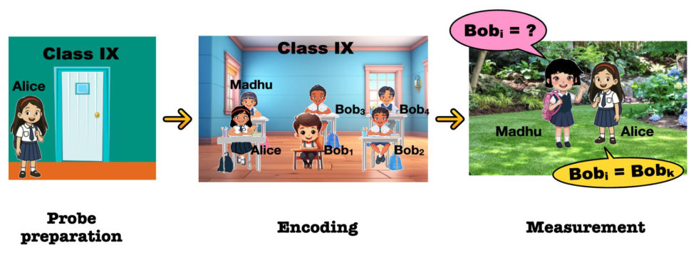
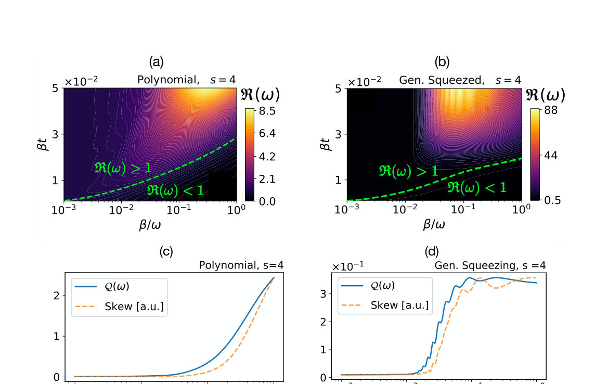
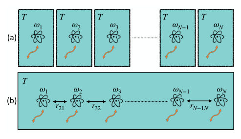
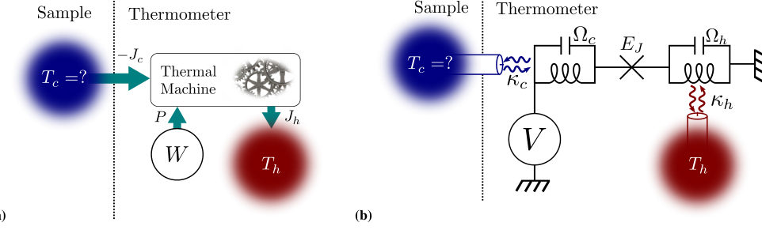
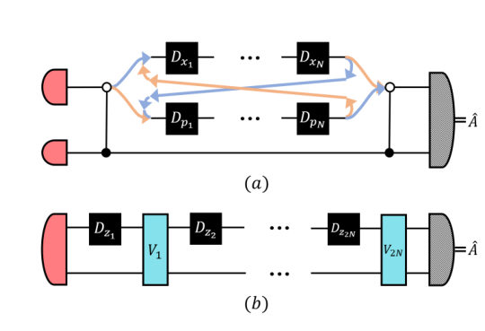
Summary. This review provides a deep dive into the field of quantum metrology, covering the mathematical foundations of parameter estimation and the transition from classical to quantum-enhanced precision. It connects theoretical breakthroughs, such as multi-parameter estimation and error-mitigation strategies, to diverse experimental platforms like superconducting qubits and NV centers. The paper serves as a roadmap for using quantum technologies to sense physical quantities with unprecedented accuracy.
Why it may be interesting. It provides a unified view of how quantum resources like entanglement and error correction can be leveraged for sensing, which is directly relevant to researchers in quantum optics, open quantum systems, and many-body dynamics.
Main problem. The fundamental challenge of achieving maximum precision in parameter estimation (e.g., magnetic, electric, or gravitational fields) using quantum resources to surpass classical limits.
Main result. A comprehensive review tracing the evolution of quantum metrology from foundational frequentist and Bayesian estimation theories to advanced multi-parameter strategies and real-world experimental implementations.
Method. The review covers mathematical frameworks including Quantum Fisher Information (QFI), Cramér-Rao bounds (single and multi-parameter), and advanced strategies like quantum error correction-aided methods, reservoir engineering, and adaptive techniques.
Model / system. The review spans a vast range of platforms including optical setups, NV centers in diamond, superconducting circuits, trapped ions, ultracold atoms, and continuous-variable systems.
Key observables. Quantum Fisher Information (QFI), Mean Square Error (MSE), phase, frequency, temperature, and many-body phenomena like entanglement and phase transitions.
Important parameters / regimes. Standard Quantum Limit (SQL), Heisenberg Limit (HL), Super-Heisenberg scaling, and the distinction between unitary and noisy encoding processes.
Assumptions / limitations. Assumes regularity conditions for Cramér-Rao bounds, the invertibility of the Fisher Information Matrix, and the presence of finite resources.
Paper structure. The paper moves from classical estimation theory to quantum estimation frameworks (single and multi-parameter), progresses through different encoding scenarios (unitary vs. noisy) and advanced strategies, and concludes by connecting theory to specific applications and experimental platforms.
We present a review on quantum metrology and sensing, from its foundations to current applications. Highlights of the review include consideration of both frequentist and Bayesian approaches to parameter estimation; single as well as multiparameter estimation; estimation for different encoding processes comprising unitary as well as noisy channels, quantum thermometry, and channels involving indefinite causal order; different estimation strategies incorporating also recent advances like quantum error correction-aided methods and reservoir engineering; usefulness of quantum Fisher information to detect resources; applications of quantum metrology in diverse arenas covering quantum many-body sensors, sensing protocols in atomic ensembles, atom-photon systems, and continuous-variable systems, quantum imaging, quantum illumination, atomic clocks and atom interferometry, etc; and experimental realizations of quantum sensors in different physical platforms.
Authors: Wei-Guo Ma, Heng Fan
Type: theory · Category: quantum gases · PDF: https://arxiv.org/pdf/2605.21900v1
Analysis basis: full PDF text, analyzed in chunks
Topic relevance: 🔥 driven-dissipative phase transition 4/5 · 🔥 non-equilibrium dynamics 4/5 · Keldysh / 2PI / non-Gaussian methods 3/5 · analog quantum simulation 3/5 · correlated / nonlocal dissipation 3/5 · methods for driven-dissipative 2/5 · non-equilibrium universality 2/5
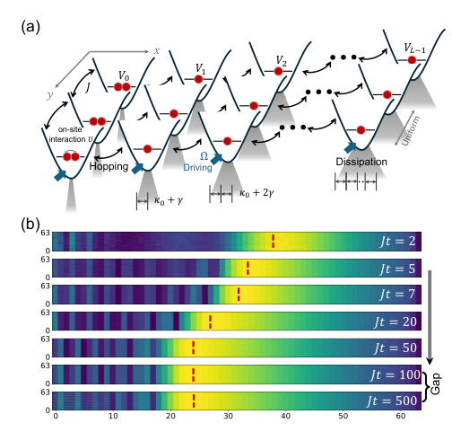
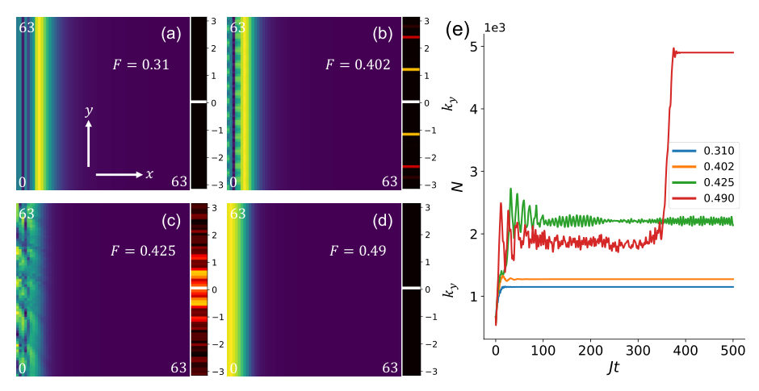
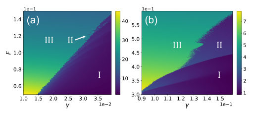
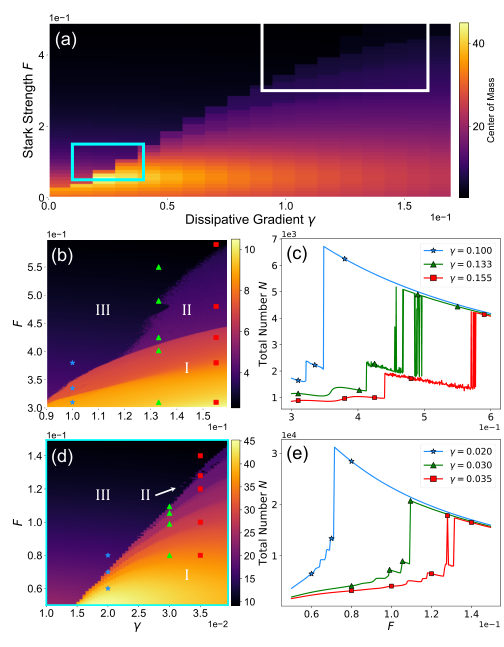
Summary. This paper shows that spatially structured dissipation can be used to select and control nonlinear resonant fronts in a driven-dissipative Bose-Hubbard lattice. By tuning the dissipation gradient and detuning ramp, one can navigate between pinned, chaotic, and localized phases. This provides a mechanism for creating reconfigurable transport barriers in programmable quantum simulators.
Why it may be interesting. It demonstrates how engineered dissipation can act as a control knob for creating and stabilizing complex nonequilibrium structures like interfaces and transport barriers in bosonic lattices.
Main problem. Investigating how spatially structured dissipation and a Stark-induced detuning ramp can be used to organize driven quantum matter and create reconfigurable transport barriers or nonequilibrium interfaces.
Main result. The study identifies a mechanism where a nonlinear resonance condition fixes a pinned density front, which can transition into pattern-locked states, spatiotemporal chaos, or localized states depending on the dissipation gradient and detuning slope.
Method. The authors use the generalized Gross-Pitaevskii equation (gGPE) for large-scale dynamics and the Truncated Wigner Approximation (TWA) to incorporate quantum fluctuations, supplemented by Bogoliubov-de Gennes stability analysis.
Model / system. A two-dimensional driven-dissipative Bose-Hubbard lattice subject to a single-photon drive, a linear Stark potential (detuning ramp), and a spatially graded loss rate.
Key observables. Local density, total particle number, center-of-mass, generalized imbalance, transverse spectra, and front width.
Important parameters / regimes. Stark tilt (F), dissipation gradient (gamma), hopping strength (J), interaction strength (U), and drive strength (Omega).
Assumptions / limitations. The TWA is assumed to be valid in the large-occupation regime, and the 2D dynamics are analyzed using a 1D reduction for the pinned-front regime.
Figures summary. Figure 1 shows a schematic of the model; Figure 3 presents global and high-resolution phase diagrams in the (F, gamma) plane, illustrating the staircase structure and particle number transitions.
Paper structure. The paper introduces the model and the concept of dissipation-selected fronts, develops the theoretical framework for front scaling and stability, presents a phase diagram of dynamical regimes, and concludes with the implications for interface engineering.
Spatially structured dissipation organizes driven quantum matter beyond Hamiltonian control. We show that a dissipation gradient combined with a Stark-induced detuning ramp selects a nonlinear resonance slice in a two-dimensional driven-dissipative Bose-Hubbard lattice, producing a pinned density front in generalized Gross-Pitaevskii simulations. The underlying resonance condition fixes the front position, while its Airy-like profile obeys a width scaling set by tunneling stiffness and the effective detuning slope. Treating the front as an emergent interface explains how tuning the selected resonance toward the minimum-loss side yields Peierls-Nabarro depinning steps, discrete transverse pattern locking, spatiotemporal chaos, and minimum-loss localization. Center-of-mass and generalized-imbalance diagnostics map these outcomes into a dynamical phase diagram as detuning-ramp slope and dissipation-gradient strength vary. The results suggest structured dissipation as a mechanism for reconfigurable transport barriers and nonequilibrium interfaces in programmable bosonic lattices.
Authors: Lucas Sá, Pedro Ribeiro, Sergey Denisov
Type: theory · Category: statistical mechanics · PDF: https://arxiv.org/pdf/2605.21628v1
Analysis basis: full PDF text, analyzed in chunks
Topic relevance: 🔥 methods for driven-dissipative 4/5 · Keldysh / 2PI / non-Gaussian methods 3/5 · driven-dissipative phase transition 3/5 · non-equilibrium dynamics 3/5 · Dicke superradiance 2/5 · Tavis-Cummings & cavity-many-emitter 2/5 · entanglement & information structure 2/5 · non-equilibrium universality 2/5
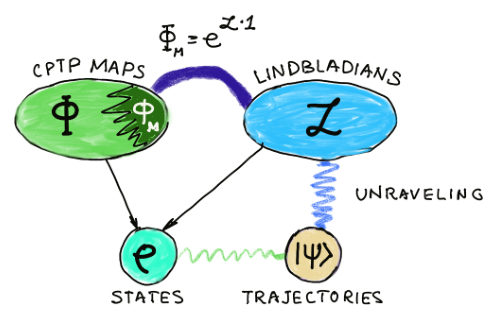
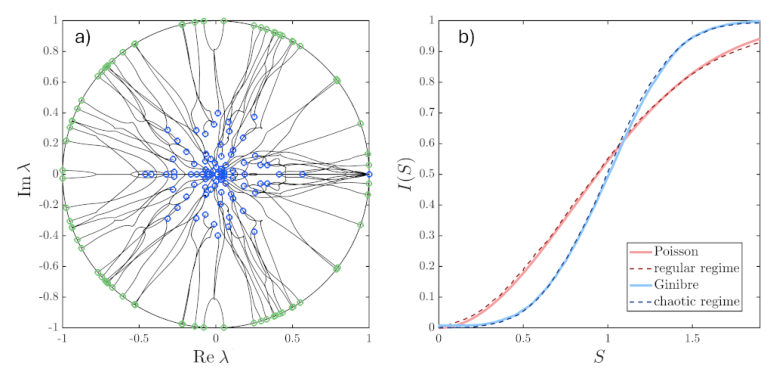
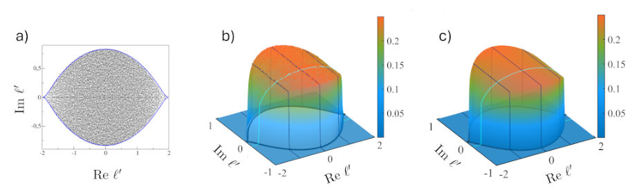
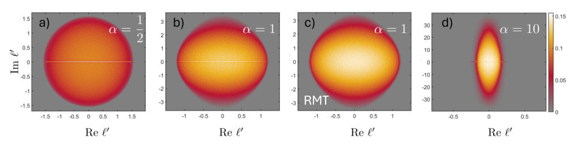
Summary. This paper reviews the emerging field of dissipative quantum chaos, focusing on how the spectral properties of open quantum systems can identify chaotic versus integrable dynamics. It connects non-Hermitian random matrix theory with physical models like the Lindblad equation to provide tools for characterizing non-unitary evolution. The work is significant for its ability to bridge the gap between quantum-to-classical transitions and the study of many-body open systems.
Why it may be interesting. It provides a comprehensive synthesis of how dissipation modifies the signatures of chaos, which is crucial for understanding decoherence and many-body dynamics in NISQ devices, ultracold atoms, and superconducting qubits.
Main problem. The paper seeks to establish a theoretical framework for dissipative quantum chaos (DQC) by extending the concepts of Hamiltonian quantum chaos to open quantum systems, specifically focusing on distinguishing between integrable and chaotic regimes in non-unitary dynamics.
Main result. The authors review the recent revival of DQC, demonstrating that the spectral properties of Lindbladians and CPTP maps (such as level spacing statistics and complex spacing ratios) serve as robust signatures of chaos, while also addressing the nuances of the quantum-to-classical correspondence.
Method. The study utilizes Random Matrix Theory (non-Hermitian ensembles like Ginibre), spectral analysis of Lindblad operators, semiclassical approximations (such as the Truncated Wigner Approximation), and free probability theory.
Model / system. The review covers various models including the Lindblad master equation (GKLS form), CPTP maps, the dissipative quantum kicked rotor/top, and many-body systems like the Dicke model and Bose-Hubbard dimers.
Key observables. Spectral statistics (level spacing distributions, complex spacing ratios, cubic-level repulsion), steady-state density operators, Wigner/Husimi functions, and photon-emission statistics.
Important parameters / regimes. Dissipation strength (Gamma), Hamiltonian vs. dissipative weight (alpha), number of decay channels (rank R), and the semiclassical limit (large spin S or particle number N).
Assumptions / limitations. The framework assumes Markovian dynamics (Lindblad form) and relies on the validity of non-Hermitian Random Matrix Theory as a proxy for universal chaotic behavior.
Figures summary. Figure 1 illustrates the relationship between Lindblad operators, CPTP maps, and quantum states, highlighting how spectral properties are used to construct measures of chaos. Figure 4 shows the spectral density of random Lindbladians under varying Hamiltonian weights.
Paper structure. The paper follows a logical progression from the fundamental definitions of DQC and its historical development to the mathematical frameworks of Lindbladians and CPTP maps, followed by symmetry classifications, spectral signatures of chaos, semiclassical limits, and finally addressing challenges and discrepancies in the theory.
Dissipative quantum chaos is an emerging theory that is expected to extend the ideas, concepts, and methodology of conventional Hamiltonian quantum chaos from coherent evolution to open quantum dynamics. The new theory should provide a set of tools to distinguish chaotic open quantum systems from integrable ones, as well as quantitative measures of their chaoticity (or, conversely, integrability). The foundations of this theory were laid in the late 1980s, and from the very start it was clear that, like its Hamiltonian predecessor, it had to be based on the spectral properties of the operators governing open quantum evolution. After these first steps, the field remained relatively quiet for many years and it is only over the last decade that the development of dissipative quantum chaos has received a strong boost, as confirmed by a large number of publications on this topic and, very recently, the first experiments performed to test its theoretical predictions. In this chapter, we review these recent developments and outline the basic foundations of dissipative quantum chaos.
Authors: Meixi Guo, Jian Huang, Rui-Yang Gong, Xian-Li Yin, Guofeng Zhang
Type: theory · Category: quantum information and computing · PDF: https://arxiv.org/pdf/2605.21909v1
Analysis basis: full PDF text, analyzed in chunks
Topic relevance: 🔥 correlated / nonlocal dissipation 4/5 · interference shaping light 3/5 · Tavis-Cummings & cavity-many-emitter 2/5 · methods for driven-dissipative 2/5 · non-equilibrium dynamics 2/5
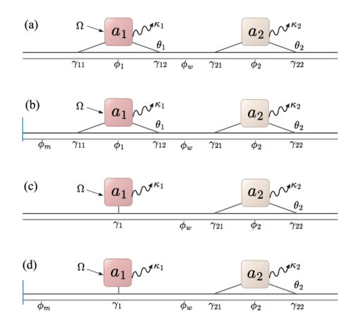
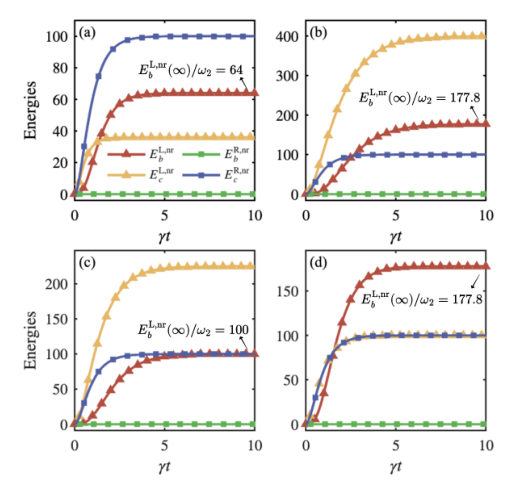
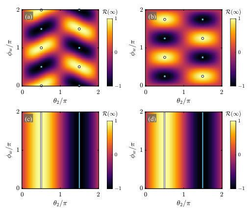
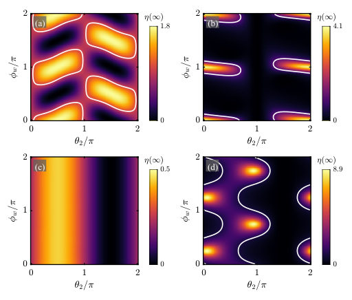
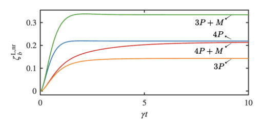
Summary. This paper proposes a method to charge remote quantum batteries using waveguide-mediated interference instead of direct coupling. By tuning propagation and coupling phases, the researchers show how to achieve unidirectional, nonreciprocal energy flow. The study also reveals that quadratic driving can create non-passive battery states where work extractability (ergotropy) becomes a distinct metric from stored energy.
Why it may be interesting. It provides a versatile design principle for directional energy transfer in quantum networks using interference and reservoir engineering, which is highly relevant to open quantum systems and quantum optics.
Main problem. Developing efficient protocols for remote quantum battery charging where the charger and battery are spatially separated, specifically overcoming the need for direct local Hamiltonian couplings and achieving unidirectional energy transfer.
Main result. The authors demonstrate that phase-tunable waveguide-QED architectures can realize nonreciprocal charging, with the 3P+M configuration achieving both perfect nonreciprocity and battery-dominated storage, while 3P setups offer distance-insensitive directionality.
Method. The study uses the SLH formalism to derive a quantum master equation and analyzes the time evolution of first and second moments under linear and quadratic driving regimes.
Model / system. A waveguide QED architecture consisting of two single-mode cavities (a driven charger and a remote battery) coupled to a 1D waveguide, exploring four configurations: 4P, 4P+M, 3P, and 3P+M (open and mirror-terminated).
Key observables. Nonreciprocal ratio (R), relative storage ratio (eta), stored energy (Eb), ergotropy (W), and anomalous second moments.
Important parameters / regimes. Propagation phases (phi_w), coupling phases (theta), waveguide coupling rate (gamma), driving amplitude (Omega), and cavity decay rates (kappa).
Assumptions / limitations. The system assumes a waveguide-mediated regime with no direct local interaction, negligible retardation effects, and small frequency mismatch between modes.
Figures summary. Figure 1 shows schematic illustrations of the four waveguide-QED configurations; Figure 2 shows time evolution of scaled energies; Figure 4 shows steady-state relative storage ratios.
Paper structure. The paper introduces the problem of remote charging, describes the waveguide-QED models and configurations, provides analytical derivations for the master equation coefficients, compares the performance of the four setups, and extends the analysis to quadratic driving and ergotropy.
Remote quantum batteries require directional and controllable energy transfer between spatially separated quantum nodes, yet most existing protocols rely on direct charger-battery Hamiltonian couplings. Here we propose a phase-tunable waveguide-QED architecture for remote quantum-battery charging, in which a driven charger and a remote battery are coupled solely via engineered waveguide-mediated interference, without any direct local interaction. We systematically compare four configurations: two-giant-emitter and giant-small-emitter hybrids, each with open or mirror-terminated waveguides. By engineering the propagation and coupling phases, the waveguide-mediated coherent exchange interaction and collective dissipation can be balanced to suppress the backward channel while retaining a finite forward channel, thereby realizing cascaded-like unidirectional charging. Our analysis shows that nonreciprocity and storage efficiency can be independently engineered, offering design flexibility for different quantum network scenarios. The giant-small-emitter mirror-terminated configuration simultaneously achieves perfect nonreciprocity and battery-dominated storage, while both giant-small-emitter configurations exhibit distance-insensitive directionality. Extending the scheme to quadratic driving, we show that anomalous second moments render the battery state non-passive, making ergotropy a performance metric distinct from stored energy. These results establish phase-tunable waveguide networks as a versatile platform for remote quantum-energy transfer and provide design principles for directional and work-extractable energy storage in quantum networks.
Authors: Cisco Gooding, Taylor Cey, Robert Mann
Type: both · Category: quantum gases · PDF: https://arxiv.org/pdf/2605.21595v1
Analysis basis: full PDF text, analyzed in chunks
Topic relevance: 🔥 analog quantum simulation 4/5 · 🔥 quantum optics experiment 4/5 · quantum measurements 3/5 · interference shaping light 2/5
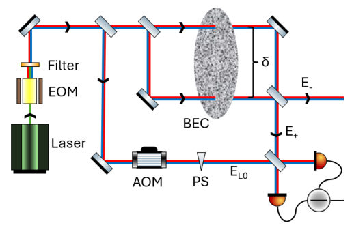
Summary. The paper proposes an experimental setup using a Bose-Einstein Condensate to test the response of a particle detector in a superposition of locations. By using a modulated laser probe and heterodyne detection, the authors show it is possible to isolate the interference signal from the detector's trajectory. The study demonstrates that using squeezed light can significantly enhance the signal-to-noise ratio for this measurement.
Why it may be interesting. It bridges quantum field theory (Unruh effect) with experimental AMO physics, providing a concrete way to use BECs and quantum optics (squeezed light) to probe fundamental relativistic quantum phenomena.
Main problem. Proposing a realizable experiment to detect and witness the superposition of detector trajectories by measuring the response of an Unruh-DeWitt detector to a relativistic quantum field.
Main result. The authors demonstrate that the interference signal (off-diagonal terms) can be isolated via heterodyne detection of a laser probe, achieving a signal-to-noise ratio of SNR >= 10 using squeezed light.
Method. The method involves using a modulated laser probe split into two branches that intersect a Bose-Einstein Condensate at two locations, followed by recombination and heterodyne detection to extract the difference-photocurrent power spectral density.
Model / system. An analogue system using a pancake-shaped Bose-Einstein Condensate (BEC) of 133Cs atoms to simulate a (2+1)-dimensional massless scalar field, with an Unruh-DeWitte detector model interacting with density fluctuations.
Key observables. The difference-photocurrent power spectral density and the total response function F(nu) containing the interference term.
Important parameters / regimes. Energy gap nu, coupling constant lambda, displacement delta, and the use of squeezed light to operate beyond the standard quantum limit.
Assumptions / limitations. Assumes the ability to implement specific parameter regimes in a 133Cs BEC and requires sufficient laser power for nondestructive continuous measurement.
Figures summary. Figure 1 provides a schematic of the experimental setup, including the EOM, BEC interaction points, beamsplitter recombination, and the heterodyne detection components.
Paper structure. The paper introduces the theoretical Unruh-DeWitt model, maps it to a BEC analogue system, details the experimental detection scheme using laser probes, calculates the expected signal and noise, and estimates the achievable SNR.
We propose a realizable experiment to test the response of a particle detector prepared in a superposition of locations interacting with a relativistic quantum field. Using a beamsplitter to prepare two superposed branches of a modulated laser probe, these branches are directed to intersect a pancake-shaped Bose-Einstein condensate at two separate locations. The branches are then recombined with another beamsplitter. Heterodyning one of the outputs, the response function corresponding to an Unruh-deWitt detector in a superposition of locations interacting with a (2+1)-dimensional massless scalar field is shown to appear in the difference photocurrent power spectrum. Operating beyond the standard quantum limit using squeezed light, we estimate the signal-to-noise ratio $SNR\gtrsim 10$ for extracting the response function over a broad set of baseband frequencies.
Authors: Yoshihiko Abe, Kanji Nishii
Type: theory · Category: statistical mechanics · PDF: https://arxiv.org/pdf/2605.22822v1
Analysis basis: full PDF text, analyzed in chunks
Topic relevance: 🔥 Keldysh / 2PI / non-Gaussian methods 4/5 · correlated / nonlocal dissipation 3/5 · methods for driven-dissipative 3/5 · non-equilibrium dynamics 2/5
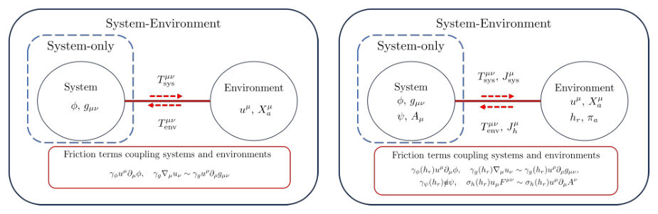
Summary. The paper proposes a new way to describe dissipative non-Abelian plasmas by treating the environment as a dynamical color-charged sector. By keeping environmental variables explicit, the authors transform difficult non-local memory effects into a local, gauge-covariant theory. This framework successfully recovers standard results like Hard Thermal Loops while ensuring thermodynamic consistency.
Why it may be interesting. This work is highly relevant to researchers in open quantum systems as it provides a rigorous framework for 'Markovian embedding'—representing non-Markovian, non-local dynamics through an enlarged local system-environment model while preserving fundamental gauge symmetries.
Main problem. Developing a local, gauge-covariant effective field theory (EFT) for non-Abelian gauge theories that accounts for non-local memory effects, dissipation, and fluctuations without violating fundamental symmetries like the color Ward identity.
Main result. The authors construct a 'bottom-up' open EFT where non-local and non-Markovian effects (such as Hard Thermal Loops) emerge naturally from a local, Markovian system-environment theory by explicitly retaining slow environmental response variables.
Method. The study uses the Schwinger-Keldysh formalism and a 'Markov embedding' approach, where environmental variables are integrated out using retarded boundary conditions to recover non-local kernels.
Model / system. A non-Abelian (Yang-Mills) gauge theory interacting with a dynamical color environment, modeled via a system-environment EFT featuring a color-frame variable, a Stueckelberg-like field, and a color-current sector.
Key observables. Color transport, color-charge storage, susceptibility, conductivity, relaxation, noise kernels, and the Hard Thermal Loop (HTL) induced current.
Important parameters / regimes. High-temperature non-Abelian plasmas, the collisionless limit, the relaxation rate (Gamma), and the Debye mass scale.
Assumptions / limitations. Assumes a separation of scales between soft modes and microscopic degrees of freedom, and a factorized initial density operator.
Figures summary. Figure 1 provides a schematic comparison between the proposed non-Abelian open EFT and a dissipative gravitational EFT, illustrating how energy-momentum or color charge is exchanged with the environment.
Paper structure. The paper reviews the Schwinger-Keldysh formalism and gravitational analogies, constructs the environmental color frame and sources, introduces the velocity-resolved hard response, and uses an appendix to demonstrate the dynamical KMS completion of the dissipative color response.
We develop a bottom-up open effective field theory (EFT) for non-Abelian gauge theories within the Schwinger--Keldysh formalism. Instead of integrating out the environment completely and starting from a nonlocal influence functional, we retain the slow environmental response variables explicitly and construct a local system-environment EFT. The environmental sector is described by a dynamical color-frame variable, Stückelberg-like field, and an associated color-current sector, which gives the nontrivial interactions and dissipation between the system and the environment. The resulting construction provides a gauge-covariant Markov embedding of nonlocal and non-Markovian color response. After integrating out the retained environmental variables with retarded boundary conditions, the reduced system theory acquires nonlocal dissipative kernels and stochastic sources. We show that the hard thermal loop response arises naturally as a particular realization of the retained environmental response. Our framework provides a local open-EFT description of color transport, memory effects, and fluctuation-dissipation structure in non-Abelian plasmas, and offers a systematic starting point for dissipative Yang--Mills EFTs with dynamical environments.
Authors: J. W. Yu, H. B Wang, X. Q. Zhou, M. Tang, Z. B. Ni, X. T. Cheng, Y. Zhao, S. N Ding, J. Y. Yan, H. H. Zhu, C. H. Li, F. Liu, C. Y. Jin
Type: theory · Category: other · PDF: https://arxiv.org/pdf/2605.21923v1
Analysis basis: full PDF text, analyzed in chunks
Topic relevance: 🔥 methods for driven-dissipative 4/5 · Tavis-Cummings & cavity-many-emitter 3/5 · non-equilibrium dynamics 3/5 · quantum measurements 2/5
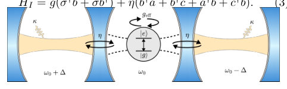
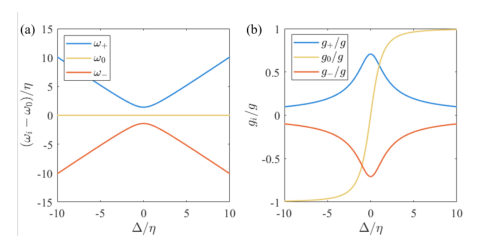
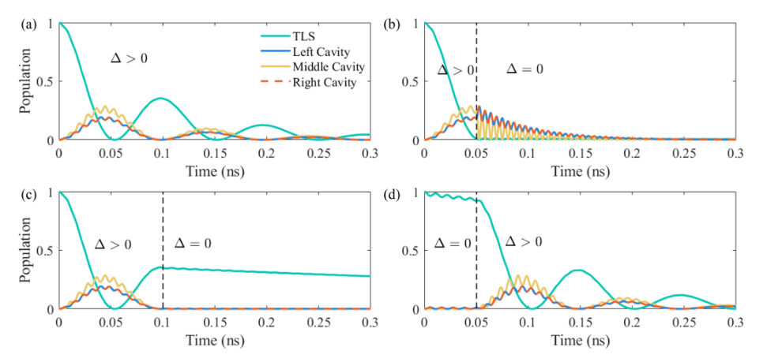
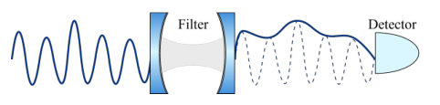
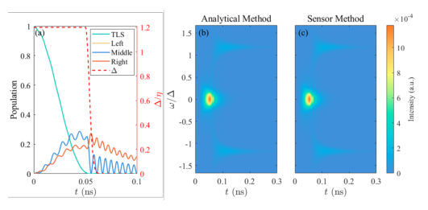
Summary. This paper introduces a new theoretical method to efficiently simulate the transient spectra of complex, time-dependent cavity QED systems. By using auxiliary 'sensor' modes, the authors bypass the high computational cost of traditional methods, allowing them to demonstrate how to switch Rabi oscillations on and off at ultrafast speeds by manipulating cavity detuning.
Why it may be interesting. It provides a computationally efficient framework for studying non-equilibrium dynamics in multi-mode systems and demonstrates a practical mechanism for ultrafast control of light-matter coupling, which is highly relevant to quantum optics and open quantum systems.
Main problem. Achieving efficient, real-time control and characterization of light-matter interactions in multi-mode, nonstationary cavity QED systems, while overcoming the computational bottleneck of resolving transient spectra in the time domain.
Main result. The development of a generalized sensor method that enables efficient calculation of time-resolved physical spectra (TRPS) and demonstrates the ultrafast switching of Rabi oscillations via supermode redistribution.
Method. A generalized sensor method using weakly coupled auxiliary modes as frequency-selective probes to compute TRPS with linear scaling, alongside numerical simulations using the Lindblad master equation.
Model / system. A three-cavity scheme consisting of a two-level system (TLS) embedded in a middle cavity, coupled to two lateral cavities, described by a time-dependent Hamiltonian in the single-excitation subspace.
Key observables. TLS excited state population, cavity mode populations, and Time-Resolved Physical Spectrum (TRPS).
Important parameters / regimes. Coupling strengths (g, eta), detuning (Delta), dissipation rates (gamma, kappa), and the ratio g/eta.
Assumptions / limitations. The system operates in the strong coupling regime; the Rotating-Wave Approximation (RWA) is applied; the sensor coupling (epsilon) is kept weak to avoid perturbing intrinsic dynamics.
Figures summary. Fig 1: Schematic of the TLS-three-cavity system and supermode localization. Fig 2: Supermode eigenfrequencies vs detuning. Fig 5: Runtime scaling comparison of the sensor method vs analytical method. Fig 6: Validation of the sensor method. Fig 9-10: TRPS and population dynamics showing Rabi oscillation control and switching effects. Fig 11-12: Robustness analysis regarding detuning amplitude and switching time.
Paper structure. The paper introduces the three-cavably cQED problem, defines the Hamiltonian and supermode structure, proposes the sensor method for efficient TRPS calculation, validates the method against analytical benchmarks, and demonstrates the physical application of ultrafast Rabi oscillation control via detuning-controlled supermode redistribution.
We propose a three-cavity scheme to realize full control of the emitter-cavity coupling strength in cavity quantum electrodynamics (cQED). The involvement of coupled oscillators gives rise to transient dynamics comprising multiple spectral components, which significantly increases the numerical cost to resolve the fluorescence spectrum in the time domain. A generalized sensor method is hence developed to simplify the calculation process for the characterization of nonstationary quantum dynamics. Multi-modal spectroscopy reveals the emergence, splitting, and disappearance of supermodes in real time. Based on the depletion of the zero-energy supermode, ultrafast switching of Rabi oscillations is demonstrated for time-domain multi-modal spectroscopy. These results exhibit a consistent picture from the spectral control of multiple oscillators to the quantum observation in ultrafast dynamics, which establishes the sensor method as a powerful theoretical tool for the ultrafast spectroscopy of cQED systems.
Authors: Valentin Dumas, Alek Lagarrigue, Tess Troisi, Gregory Sauder, Sebastien Tanzilli, Anthony Martin, Olivier Alibart
Type: experiment · Category: quantum information and computing · PDF: https://arxiv.org/pdf/2605.22339v1
Analysis basis: full PDF text, analyzed in chunks
Topic relevance: 🔥 QC/QI experiment 4/5 · 🔥 quantum optics experiment 4/5 · interference shaping light 3/5
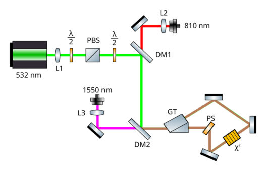
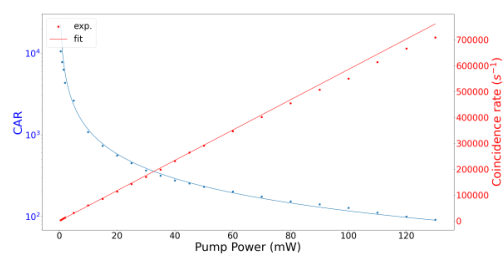
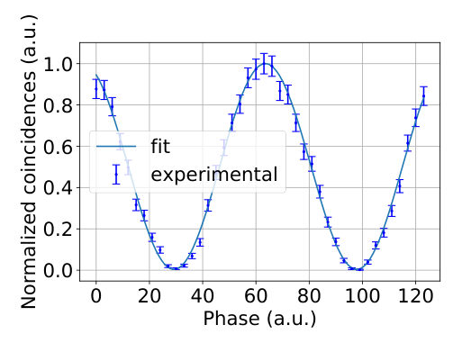
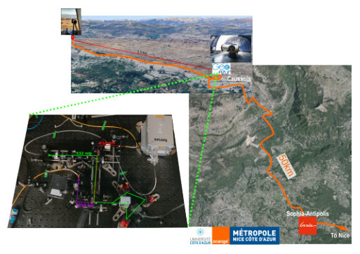
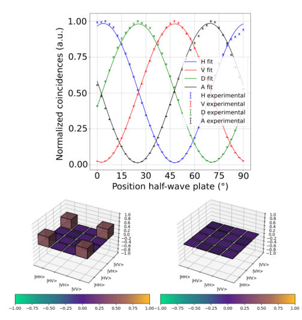
Summary. The researchers developed a dual-wavelength entanglement source that operates at 810 nm and 1550 nm, specifically designed to link satellite-to-ground and fiber-based quantum networks. By using a Sagnac interferometer with a PPLN crystal, they achieved high-quality entanglement in both polarization and energy-time bases. This provides a scalable and robust component for future global quantum communication infrastructures.
Why it may be interesting. This work is highly relevant to quantum optics and quantum networks as it demonstrates a practical hardware solution for interfacing different quantum communication architectures using hyperentanglement.
Main problem. The need for a quantum interconnect that bridges the gap between free-space (satellite) and fiber-based (terrestrial) quantum communication networks by providing a dual-wavelength entanglement source.
Main result. Demonstration of a robust, phase-stable source providing simultaneous polarization and energy-time entanglement at 810 nm and 1550 nm with high visibility (up to 99.5%) and high fiber coupling efficiency.
Method. Spontaneous Parametric Down-Conversion (SPDC) in a periodically poled lithium niobate (PPLN) crystal placed within a polarization Sagnac interferometer, followed by Franson-type interference and quantum state tomography.
Model / system. A bulk-scale experimental platform using a 532 nm pump laser, a 10 mm-long MgO-doped PPLN crystal, and a Sagnac interferometer configuration to generate non-degenerate photon pairs.
Key observables. Spectral brightness, entanglement visibility (polarization and energy-time), fiber coupling efficiency, heralding efficiency, and Coincidence-to-Accidental Ratio (CAR).
Important parameters / regimes. Wavelengths at 810 nm and 1550 nm; spectral brightness of 4800 pairs/s/mW/GHz; pump power up to 125 mW; entanglement fidelities near 99%.
Assumptions / limitations. Assumes a hybrid link loss of approximately 30 dB (15 dB free-space and 15 dB fiber) for the predicted secret key rate calculations.
Figures summary. Figure 1 shows the experimental setup; Figure 2 illustrates the evolution of CAR and coincidence rates with pump power; Figure 3 displays energy-time interference fringes; Figure 4 presents polarization visibility and the reconstructed density matrix.
Paper structure. The paper introduces the motivation for hybrid networks, describes the experimental Sagnac-based SPDC setup, details the characterization of entanglement degrees of freedom, provides a comparative analysis with other sources, and concludes with performance predictions for a hybrid QKD link.
We report the demonstration of a bulk, intrinsically phase-stable source of polarization- and time-energy-entangled photon pairs at 810nm and 1550nm, directly coupled into single-mode optical fibers. This highly non-degenerate wavelength combination is well suited for hybrid quantum communication networks, enabling low-loss transmission in optical fibers at 1550nm while maintaining efficient free-space propagation and detection at 810nm. The source is based on spontaneous parametric down-conversion in a periodically poled lithium niobate crystal embedded in a polarization Sagnac interferometer, providing inherent stability and dual-degree-of-freedom entanglement. We measure a spectral brightness of B = 4800 pair/s/mW/GHz, with fiber coupling efficiencies exceeding 0.48 at both wavelengths. The entanglement quality is characterized by high-visibility two-photon interference, yielding net visibilities of 0.995 in the polarization basis and 0.991 in the energy-time basis. These performances demonstrate a compact and robust entanglement source compatible with hybrid fiber/free-space quantum key distribution architectures, and suitable for future ground-to-satellite quantum communication links.
Authors: A. M. Tishin
Type: theory · Category: other · PDF: https://arxiv.org/pdf/2605.22796v1
Analysis basis: full PDF text, analyzed in chunks
Topic relevance: 🔥 driven-dissipative phase transition 4/5 · non-equilibrium dynamics 3/5 · methods for driven-dissipative 2/5 · non-equilibrium universality 2/5
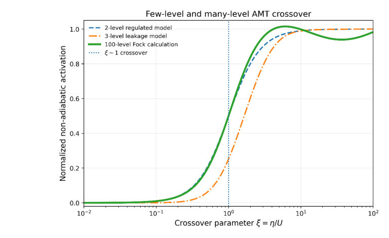
Summary. This paper proves that the non-adiabaticity parameter represents the speed of quantum state evolution in the Fubini-Study metric. It shows that nonlinearity can act as a regulator that slows down this geometric speed, effectively preventing uncontrolled parametric instabilities.
Why it may be interesting. It provides a universal, local geometric criterion for stability in driven systems, which is highly relevant for controlling parametric amplification in quantum optics, superconducting circuits, and bosonic condensates.
Main problem. Understanding the geometric origin of non-adiabaticity and the mechanism behind self-limiting instability in driven nonlinear bosonic systems.
Main result. The non-adiabaticity parameter is established as the instantaneous evolution speed in projective Hilbert space under the Fubini-Study metric, and a nonlinear regulator $U$ suppresses this speed to prevent uncontrolled growth.
Method. The author uses the Adiabatic Mode Transition (AMT) framework, a geometric derivation via the Fubini-Study metric, and mean-field approximations, validated by large-scale Fock-space numerical simulations.
Model / system. Driven nonlinear bosonic systems, such as nonlinear oscillators, magnetic resonators, or photonic cavities, modeled by a Hamiltonian with a parametric drive and a Kerr-like nonlinear regulator $U$.
Key observables. Non-adiabaticity parameter ($\eta$), effective non-adiabaticity ($\eta_{eff}$), Fubini-Study evolution speed, and mean occupation ($\langle n angle$).
Important parameters / regimes. Crossover parameter $\xi = \eta/U$, where $\xi < 1/4$ defines a stable, bounded regime and $\xi o 1$ leads to unstable growth.
Assumptions / limitations. The analysis utilizes an instantaneous vacuum state approximation and a mean-field approximation for calculating effective frequency.
Figures summary. The supplementary figures demonstrate the suppression of non-adiabatic activation and leakage in two- and three-level models, and prove numerical convergence of the results across different Hilbert-space truncations.
Paper structure. The paper introduces the geometric interpretation of non-adiabaticity, develops the self-limiting mechanism via nonlinear regulation, and provides numerical validation through multi-level and truncated Fock-basis models.
We establish that the non-adiabaticity parameter has a direct geometric interpretation as the instantaneous evolution speed of a driven quantum state in projective Hilbert space under the Fubini Study metric. In contrast to conventional asymptotic approaches, the proposed framework provides a strictly local geometric criterion that allows non-adiabatic instability and its nonlinear suppression to be evaluated continuously at each stage of the driven evolution. We further show that an occupation-dependent nonlinear regulator Usuppresses the effective geometric evolution speed, leading to bounded low-occupancy dynamics. The resulting crossover parameter provides a compact criterion for self-limited non-adiabatic instability in driven nonlinear bosonic systems.
Authors: F. Engelhardt, A. V. Bondarenko, A. Metelmann, Ya. M. Blanter, S. Viola Kusminskiy, V. A. S. V. Bittencourt
Type: theory · Category: quantum information and computing · PDF: https://arxiv.org/pdf/2605.21754v1
Analysis basis: full PDF text, analyzed in chunks
Topic relevance: 🔥 spintronics-quantum-optics interface 4/5 · entanglement & information structure 3/5 · correlated / nonlocal dissipation 2/5 · non-equilibrium dynamics 2/5




Summary. This paper proposes a two-stage magnomechanical converter to generate entanglement between optical and microwave photons. By using a YIG disk as a mediator, the system enables high-fidelity quantum state teleportation. The study demonstrates that this setup overcomes the efficiency bottlenecks found in single-stage frequency conversion models.
Why it may be interesting. It addresses a fundamental challenge in quantum networking: bridging the gap between optical-frequency flying qubits and microwave-frequency stationary qubits using a hybrid bosonic mediator.
Main problem. Generating and distributing steady-state entanglement between optical and microwave photons to enable high-fidelity quantum state teleportation across vastly different frequency regimes.
Main result. The proposed two-stage magnomechanical converter can achieve a maximum teleportation fidelity of approximately 0.75 for coherent states and generates significant output entanglement without requiring matched cooperativities.
Method. The study uses Heisenberg-Langevin equations and a covariance matrix formalism to quantify entanglement (logarithmic negativity) and teleportation fidelity (VBK protocol) within a Gaussian framework.
Model / system. A hybrid magnomechanical system consisting of a micrometer-scale Yttrium Iron Garnet (YIG) disk coupled to an optical fiber and a microwave ring resonator, involving coupled optical, mechanical, magnon, and microwave modes.
Key observables. Logarithmic negativity (E_N), teleportation fidelity (F), and quantum steering (S).
Important parameters / regimes. Optomechanical and magnomechanical cooperativities, magnon frequency, optical pump enhancement, and thermal occupation (temperature).
Assumptions / limitations. The system is treated as a linearized Gaussian system; it assumes a blue-detuned driving scheme and neglects certain higher-order nonlinearities and optomagnonic couplings.
Figures summary. Figure 1 shows the device geometry; Figure 4 illustrates entanglement vs. magnon frequency; Figure 6 plots fidelity and entanglement against temperature and coupling efficiency; Figure 11 shows quantum steering alongside entanglement; Figure 12 displays spatial mode profiles.
Paper structure. The paper introduces the physical problem of frequency conversion, describes the hybrid magnomechanical setup and Hamiltonian, details the mathematical framework for entanglement and teleportation, presents numerical results for performance and stability, and concludes with a discussion of experimental feasibility.
Generating usable output-entanglement in continuous variable systems can serve as a viable resource for improving applications in quantum information science. In this work, we show how to generate steady-state output-entanglement in a two-stage conversion setup between optical and microwave photon which employs resonantly coupled magnetic and mechanical excitations, as proposed in Phys. Rev. Applied 18, 044059 (2022). We show that the entanglement can be maximized for the same set of parameters which optimize the frequency-conversion efficiency, and that it can be leveraged for a teleportation-based state-transfer protocol for coherent input-states with fidelity close to unity. We propose an implementation based on an Yittrium Iron Garnet disk of micrometer scale, and use both simulation results and reasonable estimates to assess the performance under optimized conditions. We find a maximum teleportation fidelity of 0.75 for the proposed setup.
Authors: Pedro J. Martínez, Ricardo Chacón
Type: theory · Category: statistical mechanics · PDF: https://arxiv.org/pdf/2605.22412v1
Analysis basis: full PDF text, analyzed in chunks
Topic relevance: 🔥 non-equilibrium dynamics 4/5 · non-equilibrium universality 3/5 · Keldysh / 2PI / non-Gaussian methods 2/5 · methods for driven-dissipative 2/5
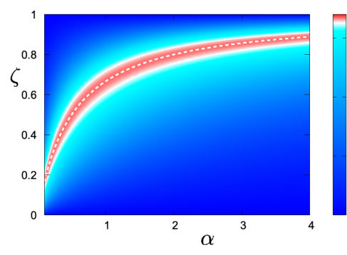
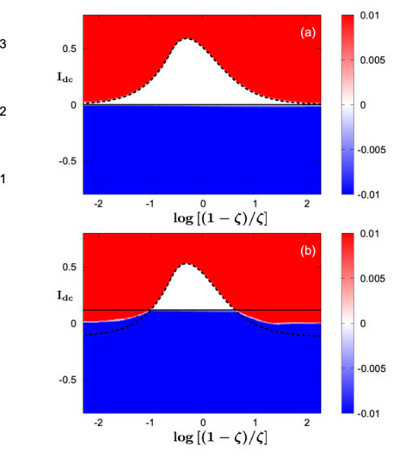
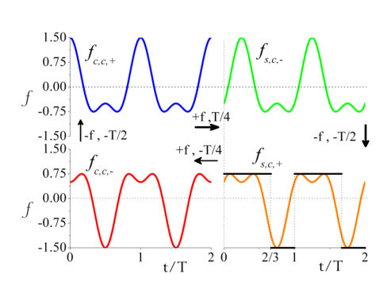
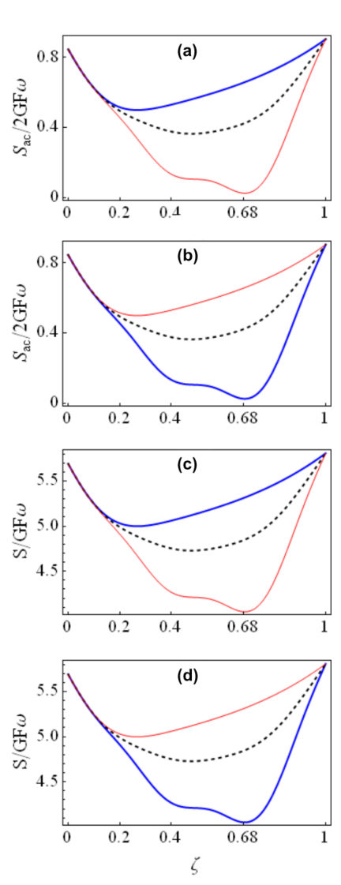
Summary. This paper introduces the law of ratchet universality to explain why specific biharmonic driving waveforms optimize the superconducting diode effect and suppress shot noise. It demonstrates that a universal waveform maximizes transport efficiency while minimizing electron-hole pair generation. These findings have significant implications for the development of superconducting power electronics and quantum computing components.
Why it may be interesting. The discovery of a universal waveform for optimizing transport coherence and minimizing noise is highly relevant to quantum optics and open quantum systems, particularly for the efficient production of nonclassical photonic states.
Main problem. The paper seeks to provide a theoretical justification for the 'magical' driving parameters that maximize the superconducting diode effect and minimize shot noise in biharmonically-driven tunnel junctions.
Main result. The authors establish the 'law of ratchet universality' (RU), which identifies a universal waveform that maximizes directed transport efficiency and minimizes excess quantum noise/electron-hole pair generation.
Method. The study uses the theoretical framework of the law of ratchet universality, applying perturbation theory, Bessel functions, and numerical simulations of overdamped dynamics and symmetry breaking.
Model / system. The system consists of superconducting tunnel junctions (TJs) and quantum conductors driven by biharmonic AC fields (fundamental and second harmonic) in the overdamped and adiabatic regimes.
Key observables. Diode efficiency, supercurrent rectification range, shot noise (current fluctuations), excess quantum noise, and probability of electron-hole pair creation.
Important parameters / regimes. Relative amplitude of harmonics (zeta), relative phase (theta/phi), driving frequencies (omega, 2omega), DC voltage/current, and temperature.
Assumptions / limitations. The analysis assumes an overdamped limit for the junction dynamics and focuses on the fast-driving or adiabatic regimes.
Figures summary. Figure 1 compares diode efficiency to RU predictions; Figure 2 shows optimal biharmonic waveforms and symmetry relations; Figure 3 illustrates the boundaries of the superconducting channel; Figure 4 plots excess and current noise as functions of relative amplitude.
Paper structure. The paper introduces the problem of unexplained optimal parameters, proposes the law of ratchet universality as a unifying principle, provides analytical derivations for optimal waveforms and noise suppression, and validates these findings through numerical simulations and comparison with previous experimental/numerical results.
This Letter discusses two retrodictions of the law of ratchet universality which explain previous numerical and experimental results concerning the diode effect in conventional superconducting tunnel-junctions in one case, and controlled suppression of electron-hole pair generation in a tunnel junction in the other, both in the presence of biharmonic driving fields. Our study demonstrates that the ratchet universal driving field maximizes the diode's efficiency while yielding a maximal rectification range for the supercurrent, on the one hand, and optimally reduces the excess quantum noise with respect to the dc noise level, thus allowing for the efficient production of nonclassical photonic states. These results suggest that the ratchet universality law seems essential for any \textit{optimal} application of the ratchet effect, particularly in the contexts of superconducting integrated power electronics, electron quantum optics, and quantum computing.
Authors: Raffaele Borrelli, Hideaki Takahashi
Type: theory · Category: numerical methods · PDF: https://arxiv.org/pdf/2605.22459v1
Analysis basis: full PDF text, analyzed in chunks
Topic relevance: 🔥 methods for driven-dissipative 4/5 · non-equilibrium dynamics 3/5 · Keldysh / 2PI / non-Gaussian methods 2/5 · entanglement & information structure 2/5
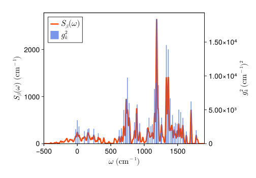
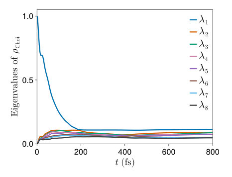
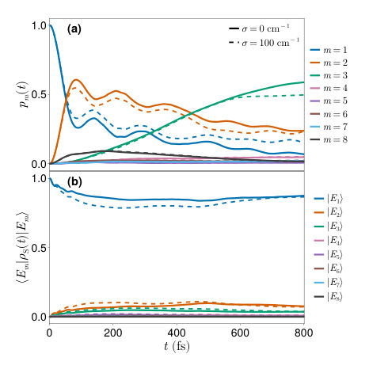
Summary. This paper presents a new computational framework that uses tensor networks and thermofield dynamics to efficiently calculate the full evolution of open quantum systems at finite temperatures. By representing the dynamics via Choi matrices, the method allows for the study of complex processes like decoherence and relaxation in molecular aggregates like the FMO complex. The approach also enables the reconstruction of memory kernels and long-time kinetic descriptions from short-time simulations.
Why it may be interesting. It provides a powerful, unified numerical tool for open quantum systems to capture full non-Markovian dynamics and memory effects in high-dimensional, finite-temperature environments using efficient tensor network techniques.
Main problem. Efficiently constructing and analyzing reduced dynamical maps for complex system-bath models at finite temperature without the computational bottleneck of state-by-state propagation.
Main result. The development of a streamlined TFD-Choi-TT framework that allows for the construction of the full reduced dynamical map from a single unitary propagation in an enlarged Hilbert space.
Method. A combination of the Choi-Jamiołkowski isomorphism, Thermofield Dynamics (TFD) purification, and Tensor-Train (TT) representation with TDVP propagation.
Model / system. Linear vibronic coupling models applied to the Fenna-Matthews-Olson (FMO) photosynthetic complex, featuring site-specific structured spectral densities and static disorder.
Key observables. Reduced dynamical maps, Choi matrices, site/excitonic populations, memory kernels, and the Choi spectrum (to measure entanglement and relaxation).
Important parameters / regimes. Temperature (300 K), time window (up to 800 fs), and maximum TT rank (220).
Assumptions / limitations. Focuses on linear vibronic models and factorized initial conditions; accuracy is limited by the time window of the discretized bath correlation functions.
Figures summary. Figure 1 shows spectral density discretization; Figure 2 compares site populations with and without disorder; Figure 5 displays the decaying memory kernel; Figure 6 and 7 compare TTM extrapolation and Pauli master equation results against direct propagation.
Paper structure. The paper introduces the TFD-Choi-TT framework, details the numerical implementation using Tensor Trains and TDVP, applies the method to the FMO complex to analyze decoherence and relaxation, and demonstrates long-time extrapolation using the Transfer-Tensor Method.
We present a streamlined implementation of a computational framework for constructing and analyzing reduced dynamical maps for complex system--bath models at finite temperature. The methodology is based on three established ingredients of quantum dynamics: the Choi--Jamiołkowski isomorphism for the representation of quantum channels, thermofield (TFD) purification of thermal environments, and tensor-train (TT) propagation of the resulting enlarged pure state. The reduced map is obtained from a single unitary propagation in a thermofield-doubled Hilbert space and represented in matrix form through the Choi--Jamiołkowski isomorphism. The TFD evolution is implemented in the TT representation, enabling efficient propagation of high-dimensional purified thermal states. We illustrate the methodology for exciton transfer in the Fenna--Matthews--Olson complex with site-dependent structured spectral densities represented by discretized bosonic environments. The resulting maps are used to analyze decoherence, relaxation, and finite-memory effects, and to assess the crossover to an effectively time-local description. The proposed approach provides a route to compute reduced propagators and to post-process them into memory kernels, transfer tensors, and effective kinetic rate descriptions for complex molecular systems.
Authors: Victor Vanthilt, Maarten Van Damme, Jutho Haegeman, Ian P. McCulloch, Laurens Vanderstraeten
Type: theory · Category: numerical methods · PDF: https://arxiv.org/pdf/2605.21597v1
Analysis basis: full PDF text, analyzed in chunks
Topic relevance: 🔥 non-equilibrium dynamics 4/5 · methods for driven-dissipative 3/5 · entanglement & information structure 2/5
Summary. The paper introduces efficient MPO encodings for the Magnus expansion and Dyson series to simulate time-dependent quantum lattice models. By using novel compression and rewiring techniques, the authors achieve high-order accuracy with manageable bond dimensions, outperforming standard methods like TDVP in the runtime-accuracy trade-off.
Why it may be interesting. This is highly relevant for many-body dynamics as it provides a systematic, high-order method to simulate driven quantum systems (like Floquet systems) with much better efficiency than traditional time-stepping methods.
Main problem. Efficiently simulating the real-time evolution of 1D quantum many-body systems under time-dependent Hamiltonians, specifically addressing the exponential growth of bond dimensions and the complexity of time-ordered expansions.
Main result. The authors develop new Matrix Product Operator (MPO) encodings for the Magnus expansion and Dyson series that are size-extensive, handle long-range interactions, and achieve an error scaling of O(dt^N).
Method. The method uses tensor network formalisms (MPS/MPO) to encode expansions, employing a 'rewiring' technique for the Dyson series and a 'row compression' algorithm to significantly reduce the MPO bond dimension.
Model / system. One-dimensional or quasi-1D quantum lattice models, including spin chains (e.g., Heisenberg XXZ) and models with time-dependent, non-commuting Hamiltonians.
Key observables. Trace distance (for finite systems) and a modified trace distance (for the thermodynamic limit) to measure error relative to reference states.
Important parameters / regimes. Bond dimension (D or chi), expansion order (N), time step (dt), and the interaction range (short-range to long-range).
Assumptions / limitations. The construction assumes injective MPS for uniqueness in the thermodynamic limit and relies on the truncation of MPO bond dimensions during compression.
Figures summary. Figure 1 and 2 show error scaling of O(dt^N) for finite and infinite systems; Figure 3 demonstrates the runtime-accuracy trade-off advantage over TDVP; Figure 4 shows high-accuracy benchmarks for the 4th-order Dyson MPO.
Paper structure. The paper begins with notation and a recap of time-independent MPO construction, followed by the Magnus expansion approach, the Dyson series approach, MPO compression techniques, and finally numerical benchmarking.
We introduce a matrix product operator (MPO) encoding of the Magnus expansion and the Dyson series for one-dimensional quantum lattice models with time-dependent Hamiltonians. The MPO construction can be made accurate up to arbitrary order in the time step, it can be applied to both finite and infinite systems, and it can handle long-range interactions. The resulting MPO can be combined with state-of-the-art time evolution algorithms based on matrix product states, allowing for drastic improvements in simulating evolution under time-dependent Hamiltonians. Our MPO construction can also be used for the optimization of quantum circuits in the context of quantum simulation of time-dependent Hamiltonians.
Authors: M. Bulakhov, A. S. Peletminskii, Yu. V. Slyusarenko
Type: theory · Category: quantum gases · PDF: https://arxiv.org/pdf/2605.22375v1
Analysis basis: full PDF text, analyzed in chunks
Topic relevance: 🔥 analog quantum simulation 4/5 · exotic spin models in light-matter 3/5 · entanglement & information structure 2/5
Summary. This paper introduces a generalized many-body Hamiltonian for ultracold atomic mixtures with different internal angular momentum states. By using spherical tensor operators, the authors provide a framework that captures all possible multipolar exchange processes. This approach offers a more universal and physically intuitive description than previous methods for studying high-spin quantum gases.
Why it may be interesting. It provides a mathematically robust and physically transparent tool for studying high-spin ultracold gases and multicomponent lattice models, moving beyond standard SU(N) models to include complex multipolar exchange.
Main problem. The lack of a consistent theoretical framework to describe many-body interactions in homonuclear mixtures where atoms occupy internal states with different total angular momenta or other quantum numbers.
Main result. The development of a universal many-body Hamiltonian using irreducible spherical tensor operators that explicitly accounts for both the exchange of angular-momentum projections and the exchange of total angular momentum.
Method. The authors utilize the irreducible spherical tensor operator formalism, applying the Wigner-Eckart theorem, Clebsch-Gordan coefficients, and 6j symbols to decompose the interaction into multipolar exchange terms.
Model / system. A many-body system of interacting, indistinguishable, homonuclear ultracold bosonic and fermionic atoms in different internal quantum states, including specific cases like Helium, Strontium, Ytterbium, Erbium, and Dysprosium.
Key observables. Interaction amplitudes (U_12^F), scattering channels (F), and multipole components (scalar, dipole, quadrupole, etc.).
Important parameters / regimes. Total angular momentum (f), its projection (m), s-wave scattering regime, and weak external magnetic fields.
Assumptions / limitations. The system is in the regime of weak external magnetic fields and low-energy s-wave scattering; atoms are sufficiently distant to allow for a multipole expansion of the electromagnetic potential.
Figures summary. Figure 1 uses Feynman diagrams to represent the effective exchange of virtual particles, specifically a virtual scalar particle and a virtual photon without total angular momentum transfer.
Paper structure. The paper begins by defining the physical necessity of the new Hamiltonian, demonstrates the mathematical advantages of the spherical tensor approach over SU(N) frameworks, reproduces known results for equal angular momentum (Sec. 3), and presents new results for mixtures with different angular momenta (Sec. 4).
We develop a general method for constructing the many-body Hamiltonian of pairwise interactions describing homonuclear mixtures of atoms occupying states with different total angular momenta or other quantum numbers. The advantage of the irreducible spherical tensor operator formalism is demonstrated: these operators give the Hamiltonian an explicit physical structure, account for all scattering channels, and include multipolar exchange interactions. The latter correspond to the exchange of both angular-momentum projections and the total angular momentum. Particular realizations of the general Hamiltonian, widely used in the physics of ultracold gases, are also analyzed. The resulting Hamiltonian provides a universal framework for investigating a broad range of quantum many-body phenomena in bosonic and fermionic atomic gases.
Authors: Ben J. Taylor, Peter R. Smith, James F. Dynes, Robert I. Woodward, Marco Lucamarini, R. Mark Stevenson, Andrew J. Shields
Type: experiment · Category: quantum information and computing · PDF: https://arxiv.org/pdf/2605.22580v1
Analysis basis: full PDF text, analyzed in chunks
Topic relevance: 🔥 QC/QI experiment 4/5 · quantum optics experiment 3/5 · quantum measurements 2/5
Summary. The paper demonstrates a practical way to protect high-speed quantum key distribution from attacks that exploit differences in detector efficiency. By using a four-state modulation technique, the researchers were able to almost entirely recover the secret key rate even when the system was under a simulated time-shift attack. This provides a robust, design-level defense for future scalable quantum communication networks.
Why it may be interesting. This work is highly relevant to quantum optics and quantum information researchers as it addresses the practical implementation of security protocols against hardware-level side-channel attacks in high-speed photonic networks.
Main problem. Quantum Key Distribution (QKD) systems are vulnerable to side-channel attacks, specifically the time-shift attack, which exploits detection efficiency mismatches between the receiver's detectors.
Main result. The implementation of a four-state countermeasure on a GHz-clocked prototype recovers 97.1% of the ideal secret key rate, effectively mitigating the impact of detection efficiency mismatch.
Method. The researchers implemented a 'four-state Bob' setup that expands phase modulation from two to four phases to symmetrize detection events, and simulated attacks by introducing controlled time-delays.
Model / system. A GHz-clocked, fiber-based, phase-encoding, decoy-state BB84 QKD prototype using a gain-switched laser diode, asymmetric Mach-Zehnder interferometers, and InGaAs avalanche photodiodes.
Key observables. Quantum Bit Error Rate (QBER), Secret Key Rate (SKR), and detection efficiency mismatch between detectors.
Important parameters / regimes. 1 GHz clock rate, 4.5 ps time-shift resolution, and an 11% QBER threshold.
Assumptions / limitations. Assumes detectors have non-identical responses across degrees of freedom (time, frequency, polarization) and that the countermeasure does not introduce new side-channels like Trojan-horse attacks.
Figures summary. Figure 1 shows a schematic of the time-shift attack; Figure 2 details the experimental setup for characterizing vulnerability; Figure 3 illustrates the normalized detection efficiency and the effectiveness of the four-state method.
Paper structure. The paper introduces the vulnerability of QKD to time-shift attacks, describes the experimental implementation of the four-state countermeasure on a high-speed system, quantifies the security and performance recovery using numerical bounds, and discusses the broader implications for scalable QKD.
We demonstrate a practical countermeasure against a well-known class of attacks on quantum key distribution (QKD) systems that exploit detection efficiency mismatch, where the receiver's detectors do not exhibit identical responses to incoming photons across all degrees of freedom. This class of quantum hacking strategies is broad and significantly includes the time-shift attack, which targets an arrival-time-dependent side channel at the receiver. The four-state countermeasure, previously only proven to be secure in theory, is implemented here on a GHz-clocked prototype QKD system and evaluated for its security and performance. We show that its presence enables almost complete recovery of the system's ideal secret key rate. Our results provide strong justification for adopting this countermeasure as a standard component in future scalable and practical QKD systems.
Authors: Dylan VanAllen, Evan McKinney, Israa G. Yusuf, Girgis Falstin, Gaurav Agarwal, Jason Pollack, Michael Hatridge, Alex K. Jones
Type: both · Category: quantum information and computing · PDF: https://arxiv.org/pdf/2605.21662v1
Analysis basis: full PDF text, analyzed in chunks
Topic relevance: 🔥 QC/QI experiment 4/5 · methods for driven-dissipative 2/5 · quantum optics experiment 2/5
Summary. The paper proposes a co-design strategy that simultaneously optimizes hardware frequency allocation and software circuit transpilation to mitigate errors in tunable-coupler quantum computers. By accounting for hardware-specific noise during the routing process, the proposed FINESSE algorithm significantly improves gate fidelity compared to standard compilers. This approach effectively manages the tension between high connectivity and the detrimental effects of frequency crowding.
Why it may be interesting. This is highly relevant for researchers in open quantum systems and quantum optics as it provides a rigorous framework for modeling how parasitic, non-local, and dissipative interactions (spectator errors and decoherence) impact the scalability of driven, multi-mode superconducting circuits.
Main problem. The paper addresses the fundamental tradeoff between connectivity and gate fidelity in superconducting quantum architectures, specifically how frequency crowding in tunable-coupler systems leads to parasitic interactions and degraded performance.
Main result. The authors developed FINESSE, a noise-aware transpilation framework that achieves up to an 8.9% reduction in log-infidelity on SNAIL architectures and a 12.3% reduction on IBM Brisbane, demonstrating that joint optimization of frequency allocation and circuit mapping is superior to standard methods.
Method. The study uses an error-budgeting framework to model coherent and incoherent errors, a constrained optimization approach for frequency assignment, and a novel transpilation algorithm (FINESSE) that uses fidelity-weighted distances for SWAP selection.
Model / system. The research focuses on superconducting quantum architectures using SNAIL-based tunable couplers and transmon qubits, specifically modeling the 'Corral' module and evaluating performance on the 127-qubit IBM Brisbane heavy-hex processor.
Key observables. Gate fidelity, circuit depth, log-infidelity cost, and connectivity/edge count.
Important parameters / regimes. Pump strength (eta), qubit and SNAIL frequencies, detuning (delta), gate duration, and the fidelity-connectivity tradeoff limit (4 qubits per SNAIL).
Assumptions / limitations. The model assumes a weak-coupling approximation where spectator-induced errors are additive and uses a conservative amplitude bound for spectator interaction to avoid reliance on precise Rabi synchronization.
Figures summary. Figure 1 shows the co-design workflow; Figure 2 details the SNAIL-qubit coupling and compatibility graphs; Figure 3 illustrates spectral positioning; Figure 13 compares log-infidelity across algorithms; Figure 15 shows fidelity degradation with increasing edge count; Figure 16 compares performance on IBM Brisbane.
Paper structure. The paper follows a co-design logic: first establishing the hardware-level problem of frequency crowding and error modeling, then presenting a frequency allocation optimization, followed by the development of the FINESSE transpilation framework, and concluding with performance benchmarks on both SNAIL and IBM architectures.
Frequency crowding is a fundamental limitation in superconducting quantum architectures, particularly in tunable-coupler systems. We present a framework that explicitly models both coherent spectator-induced errors and incoherent lifetime effects through an error budgeting approach. Using this model, we analyze how frequency crowding impacts gate fidelity as module size and connectivity scale, and formulate a constrained optimization problem to assign qubit and coupler frequencies under realistic separation and hardware constraints. We demonstrate scalable frequency allocation strategies that minimize spectator-induced errors. We further show that increasing qubit count and coupling density within a module leads to a fidelity-connectivity tradeoff. To explore the benefits at the system scale, we have developed a noise-aware transpilation approach called FINESSE, which minimizes error by selecting high-fidelity paths that satisfy connectivity via SWAP insertion while jointly optimizing downstream gate execution. We demonstrate this physics-informed architecture-transpilation co-design approach for a SNAIL-based third-order coupler that natively realizes the $\sqrt{iSWAP}$ basis with frequency aware gate fidelities. On SNAIL architectures, FINESSE achieves an average 8.9% reduction in log-infidelity cost and 6.8% reduction in circuit depth vs. SABRE. We also compare results on IBM Brisbane's architecture.
Authors: Arunabha Das, Sayan Mondal, Debarupa Saha, Ujjwal Sen
Type: theory · Category: statistical mechanics · PDF: https://arxiv.org/pdf/2605.22583v1
Analysis basis: full PDF text, analyzed in chunks
Topic relevance: 🔥 quantum measurements 4/5 · methods for driven-dissipative 2/5 · non-equilibrium dynamics 2/5
Summary. This paper explores how replacing a thermal reservoir with quantum measurements can optimize a quantum Otto engine. It finds that generalized measurements (POVMs) and non-adiabatic processes can increase work extraction and efficiency, even when the energy cost of resetting the measurement apparatus is considered.
Why it may be interesting. It provides fundamental insights into the thermodynamics of measurement-driven processes and demonstrates how controlling non-adiabaticity and measurement type can be used to optimize quantum heat engines.
Main problem. Investigating the optimal work extraction and efficiency of measurement-based quantum Otto engines, specifically comparing PVM and POVM implementations under adiabatic and non-adiabatic regimes.
Main result. POVM-based engines can outperform PVM-based engines even after accounting for the thermodynamic cost of resetting the auxiliary system, and non-adiabaticity can enhance both work output and efficiency in certain compression regimes.
Method. Analytical optimization of measurement parameters and unitary operators, combined with numerical optimization using the dual annealing algorithm and Naimark's dilation theorem.
Model / system. A single-qubit working substance undergoing a four-stroke Otto cycle, where the hot-bath thermalization is replaced by quantum measurements (PVM or POVM) using an auxiliary system.
Key observables. Extractable work, efficiency, heat exchange, and net work output after accounting for auxiliary reset costs.
Important parameters / regimes. Compression ratio (frequency ratio), non-adiabaticity parameter (transition probability), cold bath temperature, and measurement basis angles.
Assumptions / limitations. The analysis is restricted to the non-inverted population regime and focuses on two-outcome POVMs implemented via a single auxiliary qubit.
Figures summary. Figure 1 shows the schematic of the measurement-based Otto cycle; Figure 2 plots extractable work versus non-adiabaticity; Figure 4 illustrates the trade-off between POVM work gain and auxiliary reset cost as a function of temperature.
Paper structure. The paper introduces the measurement-based engine model, analyzes the adiabatic limit for PVM and POVM, extends the analysis to the non-adiabatic regime, evaluates the thermodynamic cost of POVM implementation, and concludes with operational guidelines.
Measurement-based quantum heat engines have attracted significant interest as alternatives to conventional thermal engines, as they replace the hot thermal reservoir with quantum measurements, thereby offering greater controllability and simpler implementation. Motivated by these advantages, we investigate a measurement-driven quantum Otto engine with a qubit working substance and study the optimal work extractable from such engines, including whether their performance can surpass that of conventional quantum Otto cycles. We analyze the engine in both the infinite-time (adiabatic) and finite-time (non-adiabatic) regimes, considering two distinct implementations obtained through optimization over all projection-valued measurements (PVMs) and over all two-outcome positive operator-valued measurements (POVMs). We show that measurement-based engines can outperform conventional quantum Otto engines within specific parameter regimes and that POVM-based engines can yield higher optimal work extraction than PVM-based ones. Furthermore, by incorporating the thermodynamic cost associated with resetting the auxiliary system required for POVM implementation, we demonstrate that the resulting net work output can still exceed that of PVM-based engines under suitable conditions on the spectral gaps and cold bath temperature. We also identify regimes in which non-adiabatic implementations can yield higher work output and efficiency than their adiabatic counterparts. Our study provides operational guidelines for designing improved measurement-driven quantum Otto engines.
Authors: Huan-Yu Wang
Type: theory · Category: other · PDF: https://arxiv.org/pdf/2605.21959v1
Analysis basis: full PDF text, analyzed in chunks
Topic relevance: 🔥 non-equilibrium dynamics 4/5 · driven-dissipative phase transition 2/5 · methods for driven-dissipative 2/5
Summary. This paper shows that the relative phase between different periodic drives can be used to turn the non-Hermitian skin effect on or off. It also demonstrates that this phase can control the direction in which particles accumulate at the boundaries in 2D systems. This discovery offers a new way to engineer skin density profiles in platforms like optical lattices or circuit lattices.
Why it may be interesting. It provides a novel mechanism for Floquet engineering of non-Hermitian topology, offering a way to dynamically tune the spatial distribution of modes in open quantum systems.
Main problem. Controlling the emergence and the localization direction of the non-Hermitian skin effect (NHSE) in dynamical quantum systems.
Main result. The relative phase between multiple time-periodic driving components can act as a switch to activate or deactivate NHSE and can alter the spatial direction of skin mode localization in higher dimensions.
Method. Floquet theory and Magnus expansion are used to analyze the long-time averaged effective Hamiltonian and the winding number topological invariant.
Model / system. Non-Hermitian quantum chains and 2D lattices (such as the NH-QWZ model) subject to multiple time-periodic driving (Floquet systems) with non-reciprocal tunneling.
Key observables. Winding number (C), Inverse Participation Ratio (IPR), and skin density profile.
Important parameters / regimes. Relative phase (phi) between driving components, driving frequency (omega), and tunneling amplitudes.
Assumptions / limitations. High-frequency limit (omega >> Hamiltonian scales) for the Magnus expansion; focus on PT-symmetric systems.
Figures summary. Figure 1 demonstrates the switching of NHSE on and off by tuning the relative phase and shows the corresponding change in the winding number.
Paper structure. The paper introduces the problem of NHSE control, presents a 1D model demonstrating phase-induced switching, extends the analysis to 2D systems for directional control, and discusses potential experimental realizations.
We demonstrate how the relative phase between the multiple time periodic driving can decide the emergence and the favorable localization direction of non-Hermitian skin modes. For the static non-Hermitian quantum chain with parity time symmetry, non-Hermitian skin effects (NHSEs) can be prohibited. As the dynamical driving is turned on, NHSEs get artificially reactivated, where the relative phase can serve as the controlling switch by breaking the temporal symmetry constraints. Meanwhile, a change of relative phase can also alter the spatial structures of the long-time averaged effective Hamiltonian, which will consequently lead to the variation of skin localization direction for systems of higher dimensions. Our formalisms can be generally realized in diverse optical and mechanical platforms, and will pave the way for realizing tunable skin density profiles.